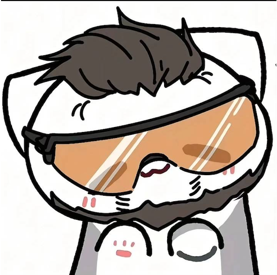

Ryuzero 7
言語学や語学、人工言語を勉強・作成している中学生です。
作品:サーカッド語
サーカッド語は、Ryuzero 7 が作っている人工言語です。単語は辞書サイトで調べられます。
入門書『ゼロから始めるサーカッド語入門』 暫定版
現在公開しているのは暫定版です。今後、内容が変わったり、追加されたりすることがあります。
サーカッド語の初学者向けの入門書です。文字と発音から始まり、会話文・文法の説明・例文・練習問題で学べます。スマホでは「拡大して読む」を押すと文字が大きくなります。
1 / 54
入門書の画像が見つかりません。index.html と同じ場所に book フォルダ(p01.webp〜p54.webp)を置いてください。
お知らせ
- 入門書『ゼロから始めるサーカッド語入門』(暫定版)を公開しました。
- ホームページを公開しました。サーカッド語の更新情報は、ここに追加していきます。
サーカッド語を、いっしょに作って学びませんか
LINEオープンチャット「サーカッド語を作る・学ぶ」で参加者を募集しています。サーカッド語に興味がある人は、気軽に入ってください。
オープンチャットに参加する